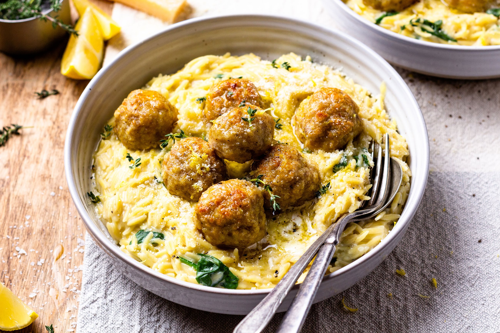

Description
Tender chicken meatballs paired with delicate orzo pasta in a comforting, flavor-packed dish. Juicy, herb-seasoned meatballs are served over light, perfectly cooked orzo that soaks up every savory bite. Finished with fresh herbs, garlic, Parmesan, and a touch of lemon for brightness, this satisfying meal is hearty enough for dinner while remaining fresh and delicious.

Ingredients
- 1 Pound Ground Chicken
- 1 Cup Grated Parmesan Cheese, Divided
- 2 Teaspoons Italian Herb Seasoning Blend, Divided
- 1/2 Teaspoon Granulated Garlic
- 2 Teaspoons Paprika, Divided
- 1/2 Cup Breadcrumbs
- 1 Large Egg, Lightly Beaten
- Salt and Freshly Ground Black Pepper to Taste
- 1 Tablespoon Oil From Sundried Tomatoes
- 1 Tablespoon Olive Oil
- 1 Tablespoon Unsalted Butter
- 8 Ounces Uncooked Orzo
- 3 Cloves Garlic, Minced
- 1 1/2 Cups Chicken Stock
- 1 Teaspoon Red Pepper Flakes, or to Taste
- 1 Cup Heavy Cream
- 1/3 Cup Chopped Oil-Packed Sun-Dried Tomatoes
- Fresh Parsley For Garnish(optional)
Directions
- Combine ground chicken, 1/2 cup Parmesan cheese, granulated garlic, 1 teaspoon Italian seasoning, 1 teaspoon paprika, breadcrumbs, egg in a bowl; season with salt and pepper. Mix gently with clean hands, and form into 16 meatballs.
- Measure out 1 tablespoon oil from the sun-dried tomatoes and heat in a large, nonstick skillet over medium heat. Add meatballs and cook until lightly browned on all sides, 8 to 10 minutes. Remove to a plate and keep warm.
- Add the olive oil and butter to the same skillet; heat until butter stops sizzling and add uncooked orzo. Cook, stirring, until orzo is lightly toasted and fragrant, 2 to 3 minutes. Add garlic and cook about 30 seconds, stirring constantly.
- Add chicken stock and stir up any browned bits. Stir in remaining Italian herb seasoning blend, paprika, and red pepper flakes. Add cream and stir. Cover and cook over medium-low heat about 8 minutes.
- Add sundried tomatoes and remaining Parmesan cheese. When well blended, return meatballs to the skillet and simmer until the meatballs are heated through and the orzo is tender, about 2 minutes.
- (OPTIONAL)Garnish with fresh parsley and serve warm.